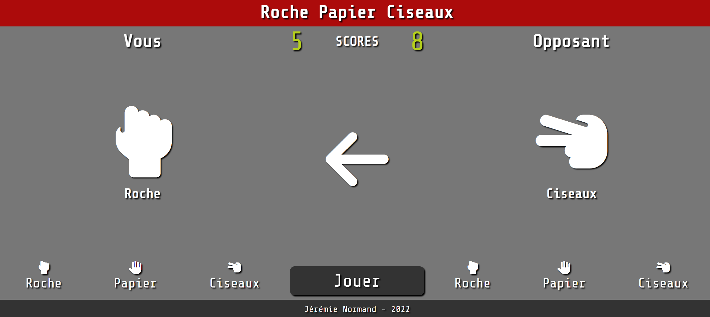

Roche, Papier, Ciseaux
Lien vers l'application Dans cette application web, il est possible de se mesurer contre l'ordinateur dans une partie de Roche, Papier, Ciseaux. L'utilisateur n'a qu'à utiliser les boutons situés en bas à gauche de l'écran pour sélectionner une option parmi roche, papier et ciseaux. Il ne reste plus qu'à appuyer ensuite sur le bouton 'Jouer' pour lancer une manche du jeu et actualiser le score.